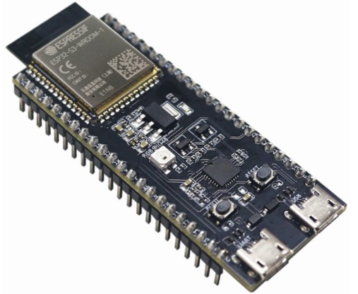
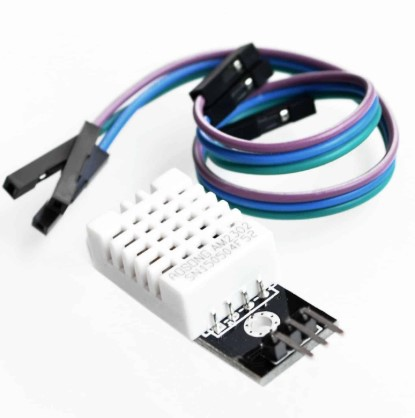
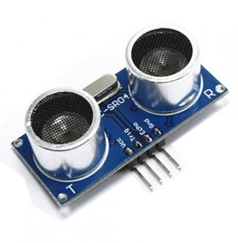
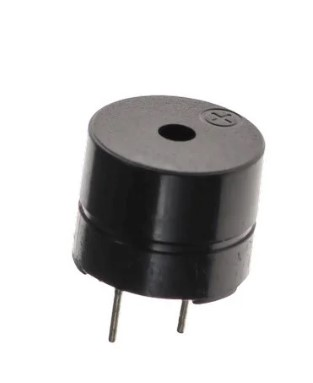
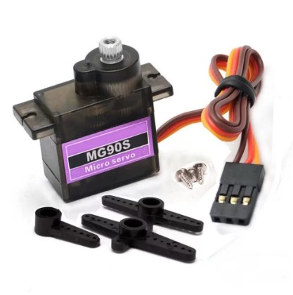
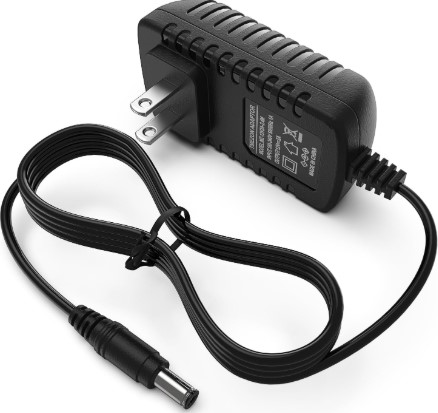

ESP-32 S3
Penerapan mikrokontroler ESP32-S3 memanfaatkan sepenuhnya modul Wi-Fi internal dan Bluetooth berdaya rendah,
yang memungkinkan sistem untuk langsung mencapai komunikasi jaringan. Integrasi periferal ESP32-S3 menjadikannya
alat yang hebat untuk memproses data. Lebih jauh, dukungannya terhadap operasi jaringan saraf dasar membantu
dalam melakukan pemrosesan data yang dikumpulkan secara lebih rumit dan lebih baik, sehingga menambah tingkat
fungsionalitas dan kinerja lain pada sistem

DHT 22
Sensor DHT22 merupakan sensor yang berfungsi untuk mengatur temperature dan kelembaban yang memiliki keluaran berupa
tegangan analog yang dapat diolah lebih lanjut menggunakan mikrokontroler. Sensor DHT 22 adalah sensor digital
yang dapat mengukur temperature -40oC – 125oC dan kelembaban udara 0% -100% di sekitarnya. Modul ini dapat digunakan
sebagai alat pengindra temperature dan kelembapan dalam aplikasi pengendali temperature dan kelembapan ruangan maupun aplikasi
pemantau temperature dan kelembapan relatif ruangan.

HC-SR04
Sensor ultrasonik adalah sensor yang mengubah besaran fisik (suara) menjadi besaran listrik dan sebaliknya. Sensor
ultrasonik HC-SR04 memancarkan gelombang ultrasonik pada frekuensi 40.000 Hz yang menyebar di udara, dan jika ada
benda atau halangan dalam jangkauannya, gelombang tersebut akan dipantulkan kembali ke modul. Sensor Ultrasonic HC-SR04
dapat melakukan pengukuran jarak tanpa kontak dalam rentang 2 cm hingga 400 cm dengan akurasi hingga 3 mm.
Prinsip kerja dari sensor ini didasarkan pada gelombang suara berfrekuensi tinggi yang jaub diatas kemampuan telinga
manusia.

Buzzer
Buzzer adalah sebuah komponen elektronika yang dapat mengubah sinyal listrik menjadi getaran suara.
Buzzer ini biasa dipakai pada sistem alarm.Sederhananya buzzer mempunyai 2 buah kaki yaitu positif dan negatif.
Untuk menggunakannya secara sederhana kita bisa memberi tegangan positif dan negatif 3 - 12V.Cara kerja Buzzer
pada saat aliran listrik atau tegangan listrik yang mengalir ke rangkaian yang menggunakan piezoeletric tersebut.
Piezo buzzer dapat bekerja dengan baik dalam menghasilkan frekuensi di kisaran 1 - 6 kHz hingga 100 kHz.
Buzzer elektronika ini berfungsi sebagai alarm pada saat absensi masuk karyawan dan indikator suara sebagai tanda
bawah suhu pada temperatur tubuh manusia melebih batas normal/upnormal dan buzzer elekronika ini akan berbunyi “beep beep”

Motor Servo
Motor servo adalah sebuah motor dengan sistem closed feedback di mana posisi dari motor akan di informasikan kembali
ke rangkaian kontrol yang ada di dalam motor servo. Dengan input ke kontrolnya yang bisa berupa sinyal analog ataupun
sinyal digital, pada dasarnya motor servo banyak digunakan sebagai aktuator yang membutuhkan posisi putaran motor yang
presisi. Motor Servo biasanya hanya bergerak mencapai sudut tertentu saja dan tidak secara kontinyu, Namun untuk
beberapa keperluan Motor Servo dapat dimodifikasi bergerak secara kontinyu. Komponen Potentisiometer pada Motor
Servo SG 90 berfungsi untuk menentukan batas maksimum putara sumbu (axis) moto servo

Power Supply 12V
Power supply 12V pada mikrokontroler adalah sumber daya listrik dengan output tegangan sebesar 12 volt yang
digunakan untuk memberikan energi kepada komponen mikrokontroler atau perangkat pendukungnya. Meskipun kebanyakan
mikrokontroler bekerja pada tegangan yang lebih rendah, seperti 3.3V atau 5V, power supply 12V sering digunakan
sebagai input utama yang kemudian diatur atau diubah menggunakan komponen seperti voltage regulator
(misalnya 7805 atau modul buck converter) untuk memenuhi kebutuhan tegangan kerja mikrokontroler. Penggunaan power
supply 12V ini juga dapat mendukung perangkat tambahan, seperti sensor, relay, atau aktuator, yang memerlukan
tegangan lebih tinggi untuk beroperasi.